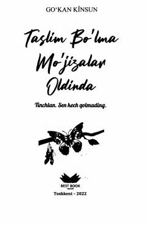

TBIchki xotirjamlik va haqiqiy baxtni topishga chorlovchi motivatsion kitob.
Ushbu kitob o'z istaklaringizdan xabardor bo'lish, ularni o'zgartirishni o'rganish va ichki xotirjamlikni topish haqida hikoya qiladi. Muallif hayotda haqiqiy baxt va mo'jiza insonning o'zi ekanligini ta'kidlab, o'quvchilarga o'zligini kashf etishda ko'maklashadi.